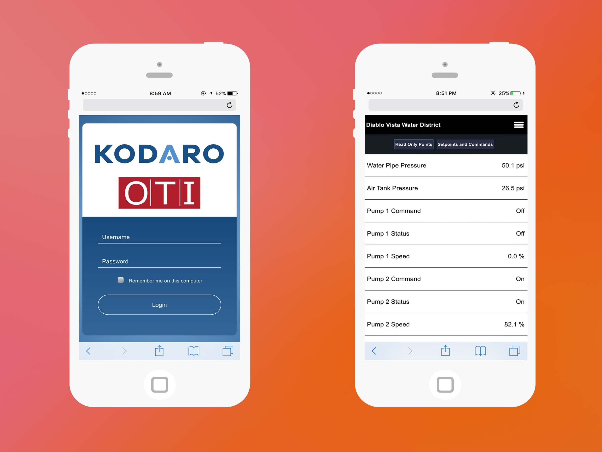
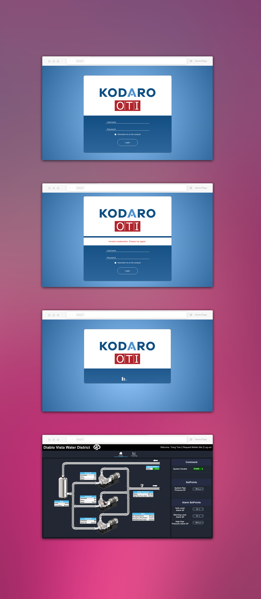

POSITION
WEB/MOBILE DESIGNER & DEVELOPER
TOOLS & SKILLS USED
HTML/CSS - JAVASCRIPT
OBJECTIVE
For this integration, we worked with the Diablo Vista Water Company to give them a way of controlling their water treatment plant. The project was small—we would be building out a webpage where users can control set points and flows. My role was to come up with an idea for a login page and to bring it to life.

APPROACH
I was given a lot of freedom in the way of design. Instead of using one of our older login templates like the company normally does, I created something entirely new (and much cleaner looking). I ditched our usual flat single-colored background this time and opted for a slight radial gradient to give the page more depth. The overall page would be blue because it made sense for a water-related service. The next thing to appear after successfully logging in is a loading screen. I created a set of six vertical loading bars that would rise and lower one after another. (HAND DRAW MOCKUP)
Because OTI and Kodaro (both are a part of Controlco) took part in this project, their logos are included on the login page. The completed project was then shown to our president, who would be presenting the interface to our customers in the following months.
